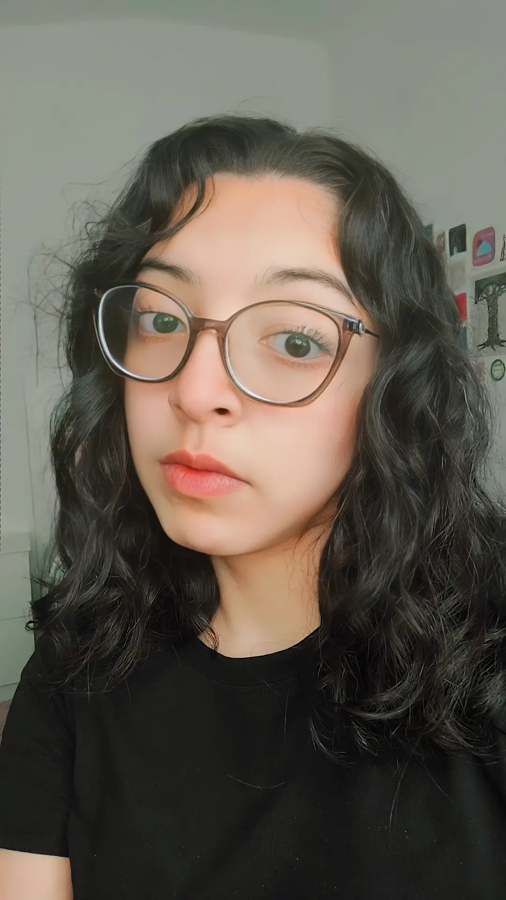

¿Quién soy?
Mi nombre es Alexa Juárez García, vivo en Xalapa, Ver. Tengo 22 años, mi cumpleaños es el 14 de Enero, significa que soy signo Capricornio. Soy estudiante universitaria, estoy en la carrera de Diseño de la Comunicación Visual, en la Universidad Veracruzana, actualmente estoy de Movilidad Académica en la Benemérita Universidad Autónoma de Puebla. Mis colores favoritos son el azul y morado, soy una persona muy trabajadora y que le es difícil darse por vencida, a pesar de que logro estresarme con facilidad, sin embargo soy muy responsable, honesta y trabajadora.
Me podría describir también como una persona muy reservada, no suelo tener muchas amistades, sin embargo cuando entro en confianza siento que puedo expresarme mejor y con más libertad, disfruto convivir con los pocas relaciones que tengo, son muy valiosas para mi, me preocupo mucho por ellos y siempre quiero lo mejor para todos.
Tengo una gatita de mascota que amo mucho, son mis animales favoritos, siento que son muy parecidos a mi, me encantaría tener más mascotas también, como un perrito o un hamster. No suelo ser muy afiocionada a las actividades al aire libre, me gusta quedarme en casa y descansar, creo que por eso tengo tanto parecido a los gatitos. También me encantaría poder participar en algún alvergue para cuidar de las mascotas indefensas de la calle.
Mi familia
Tengo una familia relativamente pequeña en comparación con mucha gente que conozco y también en base a la cultura donde vivimos donde es normal tener muchos parientes por todos lados, de mi lado de la familia donde me crié solo hemos sido mis papás, mi hermano y yo, de ahí solo tengo 3 tíos, 2 abuelas y 4 primos. Sin embargo con los que siempre convivo y con los que vivo son mi hermano y mi madre.
Mis padres
Vivo con mi madre pero igual mi padre sigue formando parte de mi familia, ellos se dedican a la abogacía, ambos han estado en el mismo medio por años.
Mi mamá
El nombre de mi mamá es Ruth García Ávida, ella nació un 12 de Mayo de 1977, actualmente tiene 46 y se dedica a trabajar en el Poder Judicial del Estado de Veracruz. Le gusta cocinar y los eventos sociales, es muy buena hablando con la gente, también es una amante de las flores.
Mi papá
El nombre de mi papá es Manual Juárez López, nació un 01 de Enero de 1971, actualmente tiene 52 años de edad y se dedica de igual forma al mundo de las leyes y abogacía, él litiga casos. Es una persona responsable, le gusta la redacción y es muy bueno haciendo escritos.
Mi hermano
El nombre de mi hermano es Imanol Juárez García, nació un 05 de Abril de 2005, tiene 18 años actualmente y es un chico muy alegre. Este semestre acaba de entrar a la universidad y piensa dedicarse a la Administración, le gustan los números y salir, disfruta siemre convivir con sus amigos y conocer nuevas personas.
Mis hobbies
No tengo tantas hobbies como me gustaría pero igual disfruto bastante de realizar alguna que otra actividad. Siempre he sido una persona muy hogareña y que no realiza mucha actividad física, prefiero las áreas donde solo vas a un lugar y consumes lo que gustas sin tanto movimiento. Por eso mis actividades favoritas son:
Música
Amo escuchar a mis cantantes favoritas, sobre todo cuando estoy en momentos de estrés y simplemente quiero dejarme llevar y necesito tranquilizarme, no escucho todo tipo de música, mis géneros predilectos son el pop y el rock, pero más el pop. Mi cantante favorita es Taylor Swift, su música siempre me ha gustado, desde pequeña la oía con mis amigas, sin embargo conforme pasaron los años mi interés ha aumentado, volviéndose ahora mis reproducciones constantes en mi app de música. Recientemente su a concierto.
Dibujo
El gusto por dibujar es algo reciente antes de entrar a la carrera de Diseño, de niña no lo hacía tanto pero hoy en día es mi trabajo y una actividad recurrente en mi universidad, es imprescindible soltar la mano en los primeros años, pero logré agarrarle un gusto muy bonito al ver mis ilustraciones terminadas.
Mi técnica predilecta es la ilustración digital, es la que más utilizado a la hora de ilustrar porque me siento más cómoda y es la que más he utilizado a lo largo de mi carrera. Uso un programa llamado Clip Studio Paint, ahí es donde más práctica he agarrado, tanto en cómo es la técnica, los pinceles, el hacer uso correcto del color, y cómo estructurar bien una ilustración a lo largo del lienzo. Algo que sí puedo decir que no me gusta nada de esto es que cuando tu equipo no está bien calibrado a la hora de imprimir los resultados pueden ser algo desastrosos si no se imprimen las imágenes en el lugar correcto, pero igual es algo que uno va aprendiendo conforme pasa el tiempo.
También me encargo de convertir mis ilustraciones en mercancía para vender en bazares, realizo prints, stickers, litrografías y dempas productos que hagan visibles mis ilustraciones.
Cine
Me ha encantado ir al cine desde que tengo memoria, hoy en día siempre intento ir a ver las películas que me interesan, llegar a la sala y vivir la película es toda una experiencia para mi, me fascina todo, también consumir contenido en la tele de mi casa o en mi teléfono es algo que hago mucho, soy fan de muchas franquicias de películas y series, mi película favorita siendo imposible de decidir porque siempre me gusta algo diferente, pero creo que el género de Animación sería mi favorito.